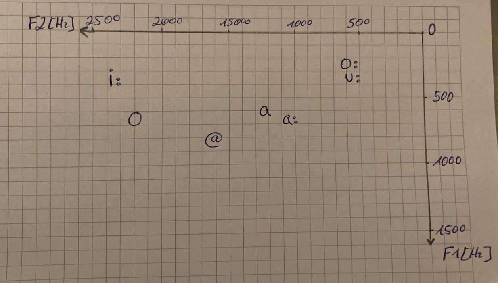

clc
clear workspace
close all
y1 = audioread('Satz_fatih.wav');
y2 = audioread('Satz_mehmet.wav');
y3 = audioread('Satz_taher.wav');
[counts1,Rey1] = hist(y1,25);
[counts2,Rey2] = hist(y2,25);
[counts3,Rey3] = hist(y3,25);
figure
bar(Rey1,counts1.*100./sum(counts1),'g');
hold on
bar(Rey2,counts2.*100./sum(counts2), 'r');
hold on
bar(Rey3,counts3.*100./sum(counts3), 'b');
title('Sprachsignal');
xlabel ("Amplituden-Wertebereiche");
ylabel ("Prozentangabe");
saveas(gcf,strcat("ueb3.png"));
Phoneme sind die kleinsten bedeutungsunterscheidenden Elemente einer Sprache. In dieser Übung werden wir sogenannte Minimalpaare, d.h. Wörter, die sich genau in einem Phonem unterscheiden, suchen, diese aufzeichnen und die Oszillogramme, d.h. die Zeitsignale, segmentieren und vergleichen. Genaugenommen sind es nicht immer Minimalpaare, sondern oft Tripel und Quadrupel etc. die sich jeweils an einer Stelle unterscheiden (a) einsilbig mit wechselndem Vokal: CVC (insgesamt fünf verschiedene) (b) zweisilbig mit wechselndem Konsonanten: VCV (insgesamt fünf verschiedene)
| Wort: | Transkription | Aufnahme Fatih | Aufnahme Mehmet | Aufnahme Taher |
|---|---|---|---|---|
| Back | bak | |||
| Bok | bo:k | |||
| Buk | bu:k | |||
| Bik | bi:k | |||
| Bock | bOk |
| Name: | 1 | 2 | 3 | 4 | 5 |
|---|---|---|---|---|---|
| Fatih | |||||
| Mehmet | |||||
| Taher |
| Wort: | Transkription | Aufnahme Fatih | Aufnahme Mehmet | Aufnahme Taher |
|---|---|---|---|---|
| "ale" von Schale | a:l@ | |||
| Ahne | a:n@ | |||
| Ase | a:z@ | |||
| Arde | aRd@ | |||
| Ake | a:k@ |
| Name: | 1 | 2 | 3 | 4 | 5 |
|---|---|---|---|---|---|
| Fatih | |||||
| Mehmet | |
|
|
|
|
| Taher |
Frage: In welchen Merkmalen unterscheiden sich die von euch gewählten Konsonanten und wie drücken sich diese im Oszillogramm und Spektrogramm aus?
Antwort: Im Oszillogramm kann man Frequenzveränderung in der Zeit erkennen. durch die Fourier-Analyse kann man ermitteln, wie stark einzelne Frequenzen in einem bestimmten Signalstück vorhanden sind. Dabei werden die einzelnen Sinussignale ermittelt, die im komplexen Signal aufaddiert wurden. Ein Signalstück liefert dabei ein Spektrum, mehrere Spektra hintereinander liefern ein Spektrogramm. Im Spektrogramm werden drei Dimensionen angezeigt: - x-Achse:Zeit - y-Achse:Frequenz - Farbe(hellvs.dunkel):Energiestärke - das Spektrum zeigt nur Frequenzstärken für einen einzelnen Zeitabschnitt - das Spektrogramm zeigt dagegen die Veränderung der Frequenzstärke in der Zeit
Frage: In welchem Frequenzbereich befindet sich z.B. die meiste Energie?
Antwort: Komplexe Signale kann man dadurch unterscheiden, wie stark einzelne Frequenzen vorhanden sind. Charakteristische Frequenzbereiche mit viel Energie sind die Formanten.
Frage: Welche Artikulationsart, bzw. - stelle bezeichnet die von euch gewählten Konsonanten?
Antwort: Frequenzbereiche mit wenig Energie.
Frage: Wie unterscheiden sich die von euch gewählten Vokale (Zungenposition, Länge -> ausmessen, Lippenrundung +/-)?
Antwort: Der Artikulationsapparat bildet ein System von Röhren (Larynx, Bereich vor und hinter Zunge etc.) mit verschiedenen Resonanzfrequenzen. Wenn Luft durch den Artikulationsapparat strömt, wird die Luft in jedem Resonanzraum angeregt, wobei jede Röhre mehrere Resonanzfrequenzen hat. Grobe Klassifikation der Vokale: • alle Vokale haben F0 • hohe Vokale: niedrige F1 • tiefe Vokale: hohe F1 • vordere Vokale: hohe F2 • hintere Vokale: niedrige F2
Frage: Vergleicht die Oszillogramme/Spektrogramme verschiedener Sprecher, ähneln sich diese für den gleichen Laut?
Antwort: Die Intensitäten der Formanten (gelb) sin sich ähnlich. Das Spektogramm kann unteranderem etwas unterschiedlich sein.
Die Bereiche hoher spektraler Energie eines Lauts bezeichnet man auch als "Formanten". Speziell die Vokale lassen sich relativ gut durch ihren 1. und 2. Formanten, kurz F1 und F2 genannt, beschreiben. Das sind die Mittenfrequenzen des ersten und zweiten Energieschwerpunkts, die man in PRAAT als Kurvenzüge über der Zeit darstellen lassen kann.Bei der Messung der Vokalformanten nimmt man sinnvollerweise als Ort der Messung die Lautmitte. Die folgende Tabelle gibt zur Orientierung die Formantfrequenzen einiger deutscher Vokale wieder. Hierbei handelt es sich um Mittelwerte, die über eine große Anzahl von Sprechern gemessen wurden. Die Aufgabe Formantkarten zu bestimmen. Dazu komplettieren wir die Vokale, die in den Beispielen aus Übung 3.2 noch fehlten, messen die Formantfrequenzen und tragen sie in ein Koordinatensystem ein.
| Fatih | Mehmet | Taher | ||||||||||||||||||||||||||||||||||||||||||||||||||||||||||||||||||||||||
|---|---|---|---|---|---|---|---|---|---|---|---|---|---|---|---|---|---|---|---|---|---|---|---|---|---|---|---|---|---|---|---|---|---|---|---|---|---|---|---|---|---|---|---|---|---|---|---|---|---|---|---|---|---|---|---|---|---|---|---|---|---|---|---|---|---|---|---|---|---|---|---|---|---|---|
|
|
|
||||||||||||||||||||||||||||||||||||||||||||||||||||||||||||||||||||||||
|  |